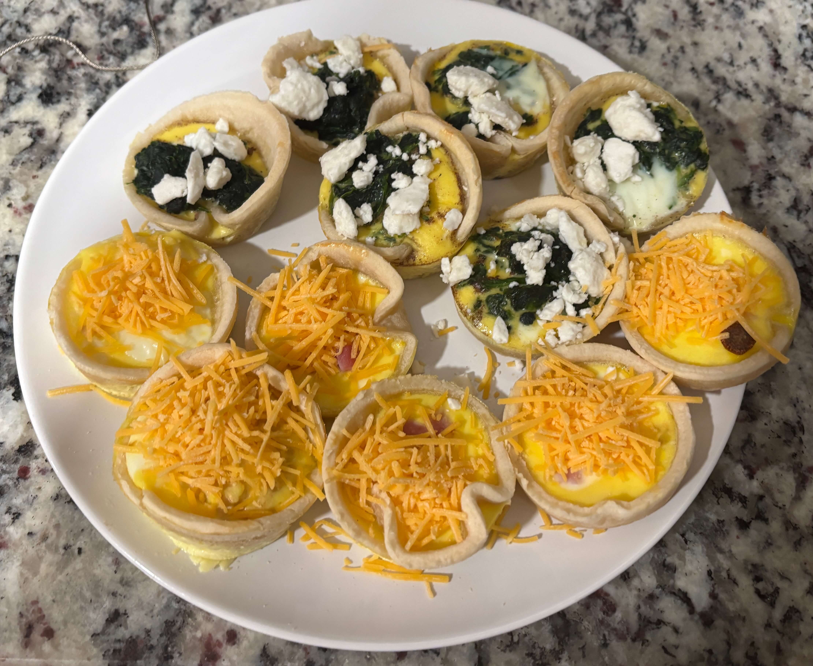

Home
Mini Quiches

Ingredients
- 3 large eggs
- 1/2 cup milk
- Salt and pepper
- 1 box refridgerated pie crust
- 1/2 cup shredded swiss or gruyere cheese
Steps
- Preheat your oven to 375 degrees F
- Roll out the pie crust and use a small circular cookie cutter or the rim of a glass to cut circles. Press them into a greased muffin tin
- Place a pinch of your variation (see tips below) into each crust
- Whisk the eggs and milk together then pour the mixture over the fillings until alomst full. Sprinkle cheese on top
- Bake for 15-18 minutes until the centers are set and the crust is golden or the internal temperature reaches 160 degrees F. The quiches should have a slight jiggle in the center when you take them out
Tips
- For spinach and feta use 1/2 cup thawed/squeezed dry spinach. Use crumbled feta instead of swiss. Add a pinch of nutmeg to the custard
- For ham and cheddar use 1/2 cup finely diced cooked ham. Use sharp cheddar instead of swiss. Add a tiny bit of dijon mustard to the egg mix
- If you want it to be extra creamy use heavy cream of half and half instead of regular milk. The fat protects the egg proteins from curdling and getting "weepy"
- If you make the spinach version make sure it is bone-dry. Excess water from the vegetables can actually cause the egg to seperate and feel "dry" or grainy
- If using a silicon muffin tray place on a sturdy metal baking sheet before filling it. Because silicone is an insulator it doesn't transfer heat as fast as metal and you might need to add 2-3 extra minutes to your bake time